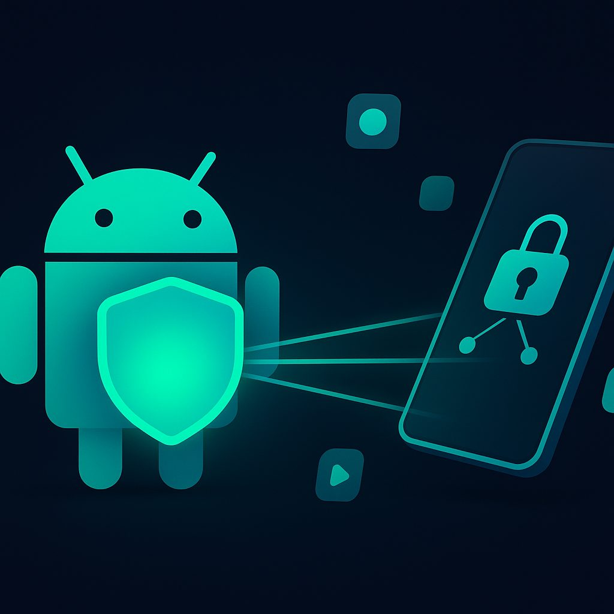

NoBorder VPN: Ваш надежный щит для Android в мире без границ
В современном цифровом мире смартфон на базе Android стал неотъемлемой частью нашей жизни. Мы используем его для работы, общения, развлечений, покупок и многого другого. Но с ростом нашей цифровой активности возрастают и риски, связанные с конфиденциальностью данных, безопасностью в интернете и доступом к информации. Именно здесь на помощь приходит VPN (Virtual Private Network) – виртуальная частная сеть, которая становится вашим надежным спутником в мире без границ. NoBorder VPN предлагает мощные и удобные решения для Android, обеспечивая вашу анонимность и свободу в сети.
1. Зачем VPN на Android: Блокировки и Безопасность Wi-Fi
Использование VPN на вашем Android-устройстве сегодня не просто удобство, а зачастую необходимость. Причин для этого несколько, и они касаются как вашей безопасности, так и свободы доступа к информации.
Обход Географических Блокировок и Цензуры
Одной из наиболее распространенных причин использования VPN является обход географических ограничений и цензуры. Многие веб-сайты, потоковые сервисы, приложения и даже социальные сети ограничивают доступ к своему контенту в зависимости от вашего местоположения. Это может быть связано с лицензионными соглашениями, авторскими правами или государственной цензурой.
- Стриминговые сервисы: Если вы хотите смотреть фильмы и сериалы, доступные только в других странах, VPN позволит вам "переместить" свое виртуальное местоположение и обойти эти ограничения.
- Социальные сети и мессенджеры: В некоторых странах доступ к популярным платформам, таким как Facebook, Instagram, Twitter или Telegram, может быть ограничен или полностью заблокирован. VPN предоставляет возможность свободно общаться и оставаться на связи.
- Новостные ресурсы и информационные сайты: В условиях информационной блокады VPN становится инструментом для получения объективной информации из различных источников, обходя государственные фильтры.
- Игровые сервисы: Доступ к некоторым играм или серверам может быть ограничен по региональному принципу. VPN поможет обойти эти барьеры.
NoBorder VPN предлагает широкий выбор серверов по всему миру, позволяя вам выбирать любое виртуальное местоположение и наслаждаться интернетом без границ.
Безопасность в Общественных Wi-Fi Сетях
Общедоступные Wi-Fi сети в кафе, аэропортах, гостиницах и торговых центрах очень удобны, но они также являются потенциальной угрозой для вашей конфиденциальности. Эти сети часто не защищены должным образом, что делает их легкой мишенью для злоумышленников.
- Перехват данных: В незащищенной сети хакеры могут легко перехватывать ваш трафик, включая логины, пароли, банковские данные и личную переписку.
- Фишинговые атаки: Злоумышленники могут создавать поддельные Wi-Fi точки доступа, имитирующие настоящие, чтобы заманить пользователей и украсть их данные.
- Внедрение вредоносного ПО: Через незащищенные сети могут распространяться вирусы и другое вредоносное программное обеспечение.
VPN создает зашифрованный туннель между вашим Android-устройством и сервером VPN. Это означает, что весь ваш трафик, проходящий через общественную Wi-Fi сеть, будет зашифрован и недоступен для сторонних глаз. Даже если злоумышленник перехватит ваши данные, он не сможет их расшифровать. NoBorder VPN использует современные протоколы шифрования, обеспечивая максимальную защиту ваших данных.
Защита Конфиденциальности и Анонимность
Ваш интернет-провайдер, государственные органы и рекламные компании могут отслеживать вашу онлайн-активность, собирая данные о ваших предпочтениях, посещаемых сайтах и поисковых запросах. VPN скрывает ваш реальный IP-адрес и шифрует ваш трафик, делая вашу онлайн-активность анонимной.
- Скрытие IP-адреса: VPN подменяет ваш реальный IP-адрес на IP-адрес сервера VPN, что затрудняет отслеживание вашего местоположения и идентификацию.
- Предотвращение отслеживания: Шифрование трафика предотвращает сбор данных о вашей активности со стороны интернет-провайдеров и других сторонних организаций.
- Защита от таргетированной рекламы: Скрывая вашу онлайн-активность, VPN помогает уменьшить количество навязчивой таргетированной рекламы.
NoBorder VPN придерживается строгой политики отсутствия логов, гарантируя, что ваша онлайн-активность не будет записываться и храниться.
2. Как установить VPN на Android: Пошагово с Hiddify
Установка VPN-приложения на Android — это простой процесс. Мы рассмотрим его на примере Hiddify, одного из рекомендованных нами клиентов для работы с NoBorder VPN.
Шаг 1: Загрузка приложения Hiddify
- Откройте Google Play Store на вашем Android-устройстве.
- В строке поиска введите "Hiddify" и нажмите Enter.
- Найдите приложение "Hiddify" (обычно оно имеет характерный значок) и нажмите кнопку "Установить".
- Дождитесь завершения загрузки и установки приложения.
Если у вас возникли проблемы с доступом к Google Play Store или вы предпочитаете устанавливать приложения из других источников, вы можете найти APK-файл Hiddify на официальном сайте проекта или на надежных сторонних ресурсах (например, GitHub). В этом случае вам потребуется разрешить установку приложений из неизвестных источников в настройках безопасности вашего Android-устройства.
Шаг 2: Получение файла конфигурации (подписки) от NoBorder VPN
Для работы Hiddify вам потребуется файл конфигурации или URL-адрес подписки, который содержит информацию о серверах и ваших учетных данных NoBorder VPN. Этот файл или ссылка генерируется после приобретения подписки.
Обычно это выглядит как длинная строка текста, начинающаяся с https:// или ss://, vmess:// и т.д., или QR-код.
Шаг 3: Импорт конфигурации в Hiddify
После установки Hiddify и получения конфигурации от NoBorder VPN, выполните следующие действия:
- Откройте приложение Hiddify.
- На главном экране или в разделе "Профили" найдите кнопку или опцию для добавления новой конфигурации. Обычно это значок "плюс" (+) или "Import".
- Вам будут предложены несколько вариантов импорта:
- Scan QR code: Если у вас есть QR-код с вашей подпиской, выберите эту опцию и наведите камеру на QR-код.
- Import from clipboard: Если вы скопировали URL-адрес подписки, выберите эту опцию. Hiddify автоматически распознает ссылку и добавит ее.
- Import from file: Если вы сохранили файл конфигурации на своем устройстве, выберите эту опцию и найдите файл.
- После успешного импорта вы увидите новый профиль в списке Hiddify.
Шаг 4: Подключение к VPN
- Выберите только что импортированный профиль в Hiddify.
- Нажмите кнопку подключения (обычно это большая кнопка с изображением питания или "Connect").
- При первом подключении Android может запросить разрешение на создание VPN-соединения. Подтвердите это разрешение.
- Индикатор в Hiddify изменится на "Connected" или "Подключено", и в строке состояния вашего Android-устройства появится значок ключа или VPN.
Поздравляем, вы успешно подключились к NoBorder VPN через Hiddify на вашем Android-устройстве!
3. Настройка подписки NoBorder VPN через Telegram бот
NoBorder VPN стремится к максимальному удобству для своих пользователей, и одним из таких удобств является управление подпиской через Telegram бот. Этот метод позволяет быстро получать и обновлять конфигурации.
Шаг 1: Доступ к Telegram боту NoBorder VPN
- Убедитесь, что у вас установлено приложение Telegram на вашем Android-устройстве.
- Перейдите по ссылке на Telegram бот NoBorder VPN, которую вы получили после приобретения подписки, или найдите его по имени пользователя.
- Нажмите "Start" (Начать) в боте, чтобы начать взаимодействие.
Шаг 2: Управление подпиской
После активации бота вам будут доступны различные команды. Обычно это кнопки внизу экрана или текстовые команды.
- "Моя подписка" или "My subscription": Эта команда покажет детали вашей текущей подписки, срок ее действия, доступный трафик и другие параметры.
- "Получить конфигурацию" или "Get config": Это самая важная команда. После ее активации бот сгенерирует и отправит вам URL-адрес подписки или QR-код.
- "Обновить конфигурацию" или "Update config": Иногда, для оптимизации работы или при изменении серверов, может потребоваться обновление конфигурации. Бот предоставит вам новую ссылку.
Шаг 3: Импорт конфигурации в VPN-клиент
Получив URL-адрес подписки или QR-код от бота, вы можете импортировать его в ваш VPN-клиент (например, Hiddify, как описано выше).
Для URL-адреса:
- Скопируйте URL-адрес из сообщения бота.
- Откройте Hiddify (или другой клиент).
- Выберите опцию "Import from clipboard" (Импорт из буфера обмена).
Для QR-кода:
- Откройте Hiddify (или другой клиент).
- Выберите опцию "Scan QR code" (Сканировать QR-код).
- Наведите камеру на QR-код, отображаемый в Telegram боте на другом устройстве (если вы используете Telegram на компьютере) или на скриншот QR-кода (если вы сделали его на том же устройстве).
Telegram бот NoBorder VPN значительно упрощает процесс управления вашей подпиской, делая доступ к защищенному интернету еще более интуитивным.
4. Лучшие VPN-приложения для Android: Hiddify, v2rayNG
Выбор правильного VPN-клиента для Android имеет решающее значение для стабильной и безопасной работы. NoBorder VPN поддерживает несколько мощных и гибких приложений, среди которых Hiddify и v2rayNG выделяются своей функциональностью и надежностью.
Hiddify
Hiddify — это относительно новое, но быстро набирающее популярность VPN-приложение, разработанное с учетом современных требований к обходу блокировок и обеспечению безопасности. Оно базируется на проекте Xray (форк V2Ray), что гарантирует высокую производительность и устойчивость к цензуре.
- Современные протоколы: Hiddify поддерживает множество передовых протоколов, таких как VLESS, VMess, Trojan, ShadowSocks, TUIC, Hysteria и другие. Это делает его крайне эффективным для обхода самых сложных блокировок.
- Удобный интерфейс: Приложение обладает интуитивно понятным и чистым интерфейсом, который делает его доступным даже для начинающих пользователей.
- Управление подписками: Hiddify позволяет легко импортировать и обновлять подписки, что удобно для пользователей NoBorder VPN, получающих конфигурации через Telegram бот.
- Интеллектуальная маршрутизация: Приложение предлагает гибкие настройки маршрутизации, позволяя пользователю определять, какой трафик должен проходить через VPN, а какой — напрямую (split tunneling).
- Активная разработка: Проект постоянно развивается, добавляются новые функции и улучшается стабильность.
Hiddify является отличным выбором для тех, кто ищет современное, надежное и удобное решение для Android, особенно в условиях жесткой цензуры.
v2rayNG
v2rayNG — это один из старейших и наиболее проверенных клиентов для V2Ray на Android. Он известен своей стабильностью, гибкостью и широкими возможностями настройки.
- Проверенная надежность: v2rayNG существует уже долгое время и зарекомендовал себя как стабильный и эффективный инструмент для обхода блокировок.
- Множество протоколов: Как и Hiddify, v2rayNG поддерживает широкий спектр протоколов, включая VMess, VLESS, Shadowsocks, Trojan, Socks и HTTP.
- Расширенные настройки: Приложение предлагает глубокие настройки для опытных пользователей, позволяя тонко регулировать параметры подключения, маршрутизацию, DNS и многое другое.
- Управление подписками: Поддерживает импорт подписок из URL, что удобно для пользователей NoBorder VPN.
- Открытый исходный код: v2rayNG является проектом с открытым исходным кодом, что способствует прозрачности и доверию.
v2rayNG может показаться немного сложнее для новичков из-за обилия настроек, но для тех, кто готов погрузиться в детали, он предлагает беспрецедентный контроль над VPN-соединением. NoBorder VPN полностью совместим с v2rayNG, предоставляя необходимые конфигурации.
Другие клиенты
Помимо Hiddify и v2rayNG, существуют и другие клиенты, которые могут быть совместимы с NoBorder VPN, например, ShadowSocks (для протокола Shadowsocks) или OpenVPN Connect (для протокола OpenVPN, если NoBorder VPN его поддерживает). Однако Hiddify и v2rayNG являются наиболее универсальными и рекомендуемыми для большинства пользователей NoBorder VPN благодаря поддержке современных протоколов, таких как VLESS и VMess.
Выбор клиента зависит от ваших предпочтений и уровня комфорта с настройками. Для большинства пользователей Hiddify будет более простым и интуитивным выбором, в то время как v2rayNG подойдет тем, кто ищет максимальную гибкость и контроль.
5. VPN и расход батареи
Один из часто задаваемых вопросов при использовании VPN на Android касается влияния на расход заряда батареи. Действительно, любое активное приложение, работающее в фоновом режиме, потребляет энергию, и VPN не является исключением. Однако современные технологии и оптимизация приложений значительно снижают это влияние.
Как VPN влияет на батарею?
- Шифрование и дешифрование: Основной задачей VPN является шифрование исходящего трафика и дешифрование входящего. Эти процессы требуют вычислительной мощности процессора вашего устройства, что приводит к некоторому дополнительному расходу энергии.
- Постоянное соединение: VPN-приложение поддерживает постоянное соединение с удаленным сервером, что также требует энергии для поддержания сетевого соединения.
- Обработка трафика: Весь интернет-трафик вашего устройства проходит через VPN-клиент, что увеличивает объем обрабатываемых данных.
Факторы, влияющие на расход батареи:
- Используемый протокол: Некоторые протоколы, такие как OpenVPN, могут быть более ресурсоемкими, чем более легкие и современные, такие как VLESS или VMess, используемые NoBorder VPN.
- Качество соединения: При слабом или нестабильном интернет-соединении VPN-клиенту приходится прикладывать больше усилий для поддержания связи, что увеличивает расход батареи.
- Активность пользователя: Чем активнее вы используете интернет (просмотр видео, загрузка больших файлов, онлайн-игры), тем больше данных обрабатывает VPN, и, соответственно, тем выше расход батареи.
- Модель устройства и версия Android: Более новые устройства с энергоэффективными процессорами и оптимизированными верси